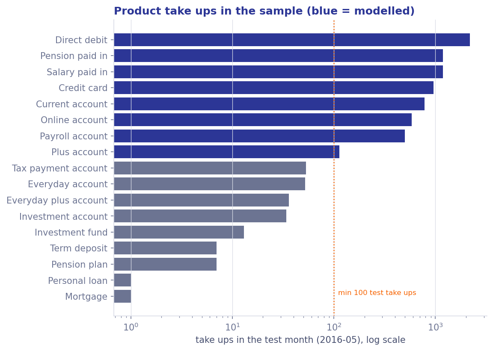
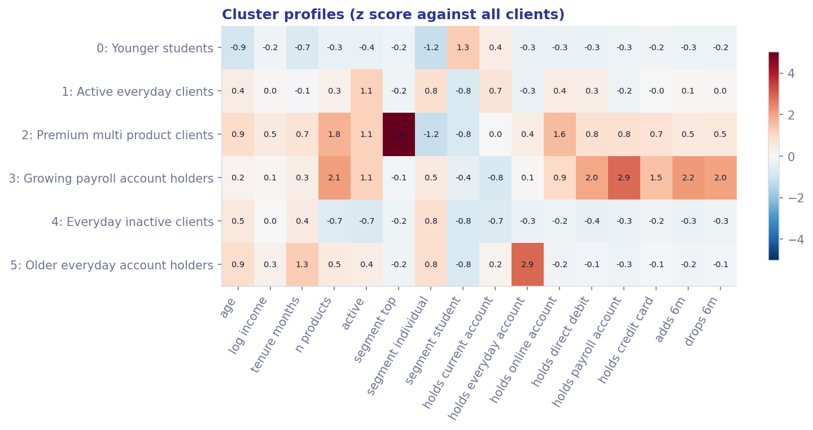
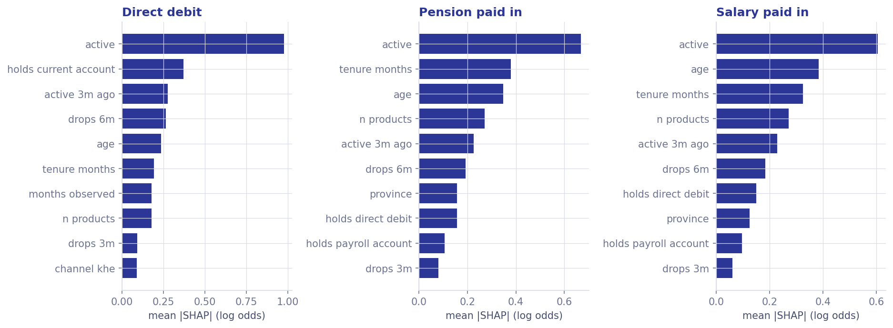

A worked prototype, built end to end
I built an agent that reads one client's record and prepares a short brief before the meeting. It suggests, it says what not to offer, and it remembers the review that is due anyway. The advisor decides.
Each dot is a sampled client, placed by its first two principal components and coloured by group.
The numbers on this page are read from data.json next to it, and the browser could not load that file.
If you opened the page straight from disk, run python -m http.server inside the docs folder and open
http://localhost:8000/analysis.html instead.
A client advisor walks into a meeting with ten minutes of preparation, if that. The question I set myself: how would I use an AI agent to make those ten minutes count, without letting it make the advisor's decisions?
My answer is an agent that does the reading, not the talking. It calls a fixed set of tools on one client, logs every call, and assembles a brief the advisor can scan in a minute. It never contacts the client and never books anything. It prepares; the advisor decides what, if anything, to raise.
What I built: a client segmentation, product propensity models with a logistic regression baseline, a rule based suitability guardrail and a tool calling agent that ties them into one brief, from real, anonymised clients. At the default threshold it makes suggestions to clients and holds back that fail a suitability rule.
The agent prepares, the advisor decides. Nothing in the brief is an instruction. A score is an estimate from last year's patterns; a rule is a floor, not a recommendation; the questions are a starting point.
I use a few words with a specific meaning on this page.
Where the numbers come from
The client profiles and product holdings are real public data: the Santander Product Recommendation set on Kaggle, monthly snapshots from a Spanish bank between and , anonymised before release. I drew a fixed sample of clients with seed , so every run sees the same people.
raw monthly rows
distinct clients in the files
months, to
clients sampled, seed
model features; sex and place of birth left out
No public dataset carries KYC review dates, risk profiles or vulnerability markers, and a brief without them would skip the part of an advisor's job that protects the client. So I generated them: a KYC risk class, the last and next review date, whether a risk profile is on file and how cautious it is, and a possible vulnerability flag.
They are generated independently of the real data, with the same seed. That is deliberate: nothing the guardrail does with them says anything about the real clients, and every place they appear on this page is labelled synthetic. The review intervals and score thresholds are illustrative, not any bank's policy.
Which products clients actually took up
Take ups in the test month per product, log scale. Blue products had enough to train and test a model.

A model needs enough people who took a product up, both to learn from and to be checked against. I only model a product with at least take ups in the test month and in training. Below that the precision estimate is mostly noise, so I do not model the product at all rather than show a score I cannot back. That leaves products without a model, including every investment product, the deposits and the loans. It has a consequence further down: the investment rules in the guardrail have nothing to block.
How clients were grouped
The first part of the brief says which kind of client this is. I clustered the clients on a compact set of profile and behaviour fields (age, income, tenure, products held, activity, recent adds and drops) with k means, for every k from to .
I pick k by silhouette, with the elbow of the inertia curve as a tie breaker.
Silhouette by number of groups
Higher means tighter, better separated groups. Orange is the k I kept.
Inertia by number of groups
The elbow: where adding a group stops buying much tightness.
To check the groups are not an artefact of one algorithm, I fitted a Gaussian mixture with the same k. The two agree at an adjusted Rand index of , where 1 would be identical and 0 no better than chance. The names and descriptions below are generated by rule from each group's average profile, not written by hand.
What sets each group apart
Average of each field per group, as a z score against all clients. Red is above average, blue below.

Which products might fit, and why
For each modelled product I trained a LightGBM model and a logistic regression baseline on the months up to , stopped early on , and tested once on , which neither model had seen.
Take ups are rare: between and of eligible clients in a month. So I report PR AUC, which asks how clean the top of the list is, rather than accuracy or ROC AUC alone, which both look excellent when almost nobody says yes.
PR AUC per product, baseline against LightGBM
Test month, with 95% bootstrap intervals. The orange tick is the base rate: what random guessing would score.
LightGBM against the baseline, per product.
An advisor reads "40%" as "four in ten clients like this say yes". That is only true if the model is calibrated. I checked it the plain way: cut the scores into fixed bands and compare the average score in each band with the share of clients in that band who actually took the product up in the test month.
I also tried isotonic calibration on the validation month. It lowered PR AUC on of products and produced flat steps of identical scores, so I dropped it and kept the raw LightGBM score.
Calibration by fixed score bands
Average score against the observed take up rate in each band, test month. On the dashed line the score means what it says.
Up to the middle bands the dots sit near the line. In the top bands some products drift: the worst case is the , where clients scoring to averaged a score of but took it up.
That is why the brief never shows a bare probability. It shows the score, with any score of or more shown as "above ", next to the band's real record, counted only when the band holds at least clients: "In the test month, x% of the n clients scoring between a and b took it up." The advisor gets the evidence, not my interpretation of it.
What the score leans on
Mean absolute SHAP value per feature, for some of the modelled products. Larger means the score moves more with it.

The brief turns the top positive SHAP contributions for one client into short phrases, such as "already has a pension paid in" or "an active client". I label them "the score leans on", not "why". SHAP explains the model, not the client: it says what moved the number, not what the client wants.
The brief itself
These are briefs the pipeline generated for the meeting on . I chose them by rule to cover every group, every rule that fires and a few reviews that are due, then filled up with a random draw. Real client ids are replaced by a reference.
The agent calls the same tools in the same order for every client and logs each call. Nothing reaches the brief that is not in this log.
How strict the brief should be
A product only reaches the brief if its score clears a threshold. Set it low and every brief fills up with weak ideas; set it high and most advisors get nothing. The default of is my judgement, not a measured optimum, so here it is on a slider, run over all clients in the brief population.
Suggestions, held back and in progress, by threshold
Counts across the brief population. The orange line is your threshold.
What holds them back, at your threshold
Blocked suggestions per suitability rule. One suggestion can break more than one rule.
The review that was due anyway
Every client in the synthetic layer has a KYC risk class and a next review date. The intervals are illustrative: every year for high risk, years for medium and for low. Within days of the meeting date, clients () have a review due, and of those are already overdue.
An overdue review changes the brief. Every new product waits, and the brief opens with one line before anything else: "" The advisor still decides, but the brief does not pretend the review is optional.
Reviews falling due, by KYC risk class
Share of clients in each class whose review is overdue or due within the window. Synthetic data.
Why the guardrail matters
The model was too cautious, or a rule was too strict. The client leaves without hearing about something that would have suited them. That is a lost conversation, and it is recoverable: it can come up next time, or the client can ask.
Credit for a client with no recorded income, or for someone flagged as possibly vulnerable. Even if the advisor stops it in the room, the bank has put it on the table. That is a duty of care failure, and it does not come back with an apology.
The model is free to find patterns. The guardrail is a short list of plain rules, each a few lines of code with a test, each returning a sentence the advisor can read. A product that breaks one does not disappear: it moves to "what not to offer", with the reason, so the advisor knows it was considered. Here is what each rule did at the default threshold.
rules cannot block anything yet. They guard investment products, and no investment product had enough take ups in the sample to model, so there is no score for them to stop. They stay in the code and in the tests, so they work the day an investment model exists: clients have no risk profile on file and would be held back.
The model says what is likely. The rules say what is allowed. The advisor says what is said.
What this cannot tell you
A prototype that hides its caveats is a pitch. These are the ones I would raise first.
A high score means clients like this took the product up before. It does not mean this client wants it, needs it, or would benefit. That is why the brief opens with questions.
Salary paid in, pension paid in and the payroll account tend to arrive as a set. A very high score for one of them often just means the income is already flowing. The brief marks those as likely already in progress instead of suggesting them.
Every metric comes from a single month, , of Spanish retail data from to . These are private clients, not business clients, and the patterns are old.
Review dates, risk classes, risk profiles and vulnerability are synthetic and independent of the real data. The guardrail logic is real; the counts it produces are illustrative.
Scores are well calibrated in the low and middle bands, less so in the top ones for some products. The brief shows the band's observed rate for exactly this reason, and caps the displayed score.
products had too few take ups, including every investment product. The brief is silent on them, which is honest but leaves a gap an advisor would notice.
I excluded sex and place of birth from the features. That is a start, not an audit: age, province and channel can still act as proxies, and I have not measured outcomes by group.
Nobody has used these briefs in a meeting. Without feedback on which suggestions were raised and how they landed, the thresholds and phrasing are my best guess.